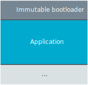
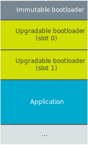

The architecture behind the secure bootloader solutions provided by nRF Connect SDK is based on the chain of trust concept.
By using this secure bootloader chain, you can ensure that all code being executed has been authorized and that your application is protected against running altered code.
If, for example, an attacker tries to modify your application, or you have a bug in your code that overwrites parts of the application firmware image, the secure bootloader chain detects that the firmware has been altered and your application does not start.
Choose the structure of the secure bootloader chain depending on which firmware update scheme you need:
If you want the bootloader to perform firmware updates for only upgrading an application, then use the single-stage, immutable bootloader solution.
If you want the bootloader to support firmware updates for both itself and the application, then use the two-stage, upgradable bootloader solution.
A secure system depends on building and maintaining a chain of trust through all the layers in the system.
Each step in this chain guarantees that the next step can be trusted to have certain properties because any unauthorized modification of a subsequent step will be detected and the process halted.
Each layer guarantees the trustworthiness of the following layer, all the way back to a property in the system referred to as root of trust (RoT).
A RoT consists of hardware, software, and data components that must always behave as expected because any misbehavior cannot be detected.
You can compare a chain of trust to the concept of a door with its root of trust being a key:
You trust a door because you trust the lock.
You trust the lock because you trust the key.
You trust the key because it is in your pocket.
If you lose this key, you can no longer trust this door.
In the context of the bootloader, a step in the chain of trust is the boot of a specific image.
As such, the secure bootloader chain consists of a sequence of images that are booted one after the other.
For a system to establish a root of trust, the first image in the system verifies the signature of the next image, which can either be an application or another bootloader image.
If the next image is another bootloader image, that one must verify the image following it to maintain the chain of trust.
After all of the images in the bootloader chain have been verified successfully, the application starts.
There are two implementations currently supported:
The first implementation provides the first stage in the chain, the immutable nRF Secure Immutable Bootloader, which could be either nRF Secure Immutable Bootloader or MCUboot.
It does not support bootloader upgradability, but it is useful if you need just the capability to update your application.
See the following image for an abstract representation of the memory layout for an application that uses only an immutable bootloader in its boot chain:

The second implementation provides both the first stage in the chain, the immutable bootloader (nRF Secure Immutable Bootloader), and uses MCUboot as the upgradable second-stage bootloader.
This implementation provides the capability to update both your bootloader and your application.
This is useful when a bootloader performs additional complex operations, like using a software stack.
See the following image for an abstract representation of the memory layout for an application that uses both an immutable and an upgradable bootloader in its boot chain:

For detailed information about the memory layout, see the partition configuration in the partitions.yml file, located in the build folder directory, or run ninjapartition_manager_report.
Note
You must enable the Partition Manager to make the partitions.yml file and the partition_manager_report target available.
See Partition Manager and Multi-image builds for details.
The first step in the chain of trust is a secure, immutable, first-stage bootloader.
This immutable bootloader runs after every reset and establishes the root of trust by verifying the signature and metadata of the next image in the boot sequence.
If the verification fails, the boot process stops.
This way, the immutable bootloader can guarantee that the next image in the boot sequence will not start up if it has been tampered with in any way.
For example, if an attacker attempts to take over the device by altering the firmware, the device will not boot, and thus not run the infected code.
The immutable bootloader is flash-locked and cannot be modified or deleted without erasing the entire device.
For the nRF Secure Immutable Bootloader, see Locking the flash memory for more information.
Except for providing your own keys, there is no need to modify the immutable bootloader in any way before you program it.
The verification provided by this bootloader is recommended and suitable for all the most common user scenarios and includes the following checks:
Signature verification - Verifies that the key used for signing the next image in the boot sequence matches one of the provided public keys.
Metadata verification - Checks that the images are compatible.
Caution
You must generate and use your own signing keys while in development and before deploying when using either MCUboot or the nRF Secure Immutable Bootloader as an immutable bootloader.
See Using development keys for more information.
If you also need the capability of updating the bootloader, you can add a second-stage upgradable bootloader to the bootloader chain.
It can be updated through either wired or over-the-air (OTA) updates, unlike the immutable bootloader.
The immutable bootloader, acting as the root of trust, protects the upgradable bootloader, which must also continue the chain of trust by verifying the next image in the boot sequence.
For this reason, the immutable bootloader is responsible for upgrading the upgradable bootloader and verifying its metadata and image integrity.
For more information about how the immutable bootloader accomplishes this, see the Flash memory layout section of the nRF Secure Immutable Bootloader.
The upgradable bootloader carries out the same signature and metadata verification as the immutable bootloader.
Also, it can upgrade both itself and the following image in the boot sequence, which, in most cases, is an application.
Caution
You should add a second-stage bootloader only when necessary by the design or firmware upgrade needs.
Adding the second stage bootloader for no reason will lead to a degradation of the system’s overall security, as attackers can exploit bugs that may exist in either bootloader.
When programming an upgradable bootloader, the build system can automatically generate pre-signed variants of the image verified by the nRF Secure Immutable Bootloader.
The upgradable bootloader does not use pre-signed variants for updating the application.
You must build with pre-signed variants when building upgrade images for the image that follows the nRF Secure Immutable Bootloader in the boot chain, such as the upgradable bootloader or the application.
Firmware update packages of the upgradable bootloader must contain images for both slots, since it may not be known which slot is in use by its current version while deployed in the field.
See the Pre-signed variants section of the nRF Secure Immutable Bootloader documentation for more details.
When not building firmware update packages, pre-signed variants are not strictly necessary but can be used as a backup mechanism in case the image in the primary slot becomes corrupted, for example from a bit-flip.
Having both slots programmed allows the immutable bootloader to invalidate the corrupt image and boot into a valid one.
Flash memory partitioning is handled differently for each bootloader.
After building the application, you can print a report of how the flash partitioning has been handled for a bootloader, or combination of bootloaders, by using Partition placement reports.
For most applications, MCUboot requires two image slots:
The primary slot, containing the application that will be booted.
The secondary slot, where a new application can be stored before it is activated.
It is possible to use only the primary slot for MCUboot by using the CONFIG_SINGLE_APPLICATION_SLOT option.
This is particularly useful in memory-constrained devices to avoid providing space for two images.
See the Image Slots section in the MCUboot documentation for more information.
The nRF Connect SDK variant of MCUboot uses the Partition Manager to configure the flash memory partitions for these image slots.
In the default configuration, defined in bootloader/mcuboot/boot/zephyr/pm.yml, the partition manager dynamically sets up the partitions as required for MCUboot.
For example, the partition layout for zephyr/samples/hello_world using MCUboot on the nrf52840dk_nrf52840 board would look like the following: